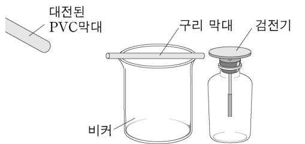

수업 상황과 20세기 초 원자 모형 발전사 — 모형의 개발과 사용, 유추적 사고, 라카토스 연구 프로그램Classroom episodes vs history of atomic models · modeling · analogical reasoning · Lakatos' research programmes
<자료 1>은 물리 교수·학습 상황을, <자료 2>는 20세기 초 물리학 발전사의 일부를 요약한 것이다. 물리 교수·학습 상황과 물리학자들이 새로운 지식을 구성하는 과정의 유사성에 대해 <작성 방법>에 따라 논하시오. [10점]
(가)
(나)
(다)

19세기 말경 과학자들은 물질이 원자와 분자로 구성되어 있다는 것에 대해 많은 증거를 가지고 있었지만 원자 자체에 대해서는 거의 모르고 있었다. 러더퍼드(E. Rutherford) 연구팀은 α 입자의 속성에 대해 연구를 하던 중 원자에 입사된 α 입자가 90도 이상의 둔각으로 산란되는 것을 발견하였다. 이 현상을 설명하기 위해 러더퍼드는 원자의 질량 대부분이 좁은 공간에 집중된, 양전하를 띤 무거운 핵의 존재를 제안하였다. 무거운 핵과 가벼운 전자로 이루어진 원자 구조가 가능한가에 대한 문제는 무거운 태양 주위를 중력에 의해 공전하는 행성들로 이루어진 태양계처럼 원자도 무거운 핵 주위를 전기력에 의해 공전하는 전자들로 구성된다고 가정하면 설명되었다.
원자에 대한 태양계 모형은 가속하는 전자가 에너지를 방출하기 때문에 결국 원자가 붕괴된다는 문제가 있었다. 1913년 보어(N. Bohr)는 원자에서 전자가 허용된 궤도에 있을 때는 전자기 복사를 하지 않고 허용된 궤도 사이를 전이할 때만 복사선을 방출하거나 흡수한다는 모형을 제시하였다. 보어의 모형은 당시 알려진 수소 선스펙트럼 관찰 사실을 적절히 설명할 수 있었기에 즉각적이고 광범위하게 그것을 일반화하려는 노력이 이어졌다. 이러한 과정에서 보어의 초기 모형으로 설명할 수 없는 관찰 사례들도 발견되었다. 그럼에도 불구하고 보어의 모형은 폐기되지 않고 환산 질량과 상대론적 효과를 반영하면서 정교화되었다.
- <자료 1>의 (가)에서 학생이 사용한 기능을 2015 개정 과학과 교육과정의 ‘내용 체계’에 제시된 ‘기능’ 중에서 쓰고, 과학자가 이 기능을 사용하는 사례를 <자료 2>에서 찾아 해당 사례에서 드러나는 이 기능의 역할을 제시할 것.
- <자료 1>의 (나)에서 학생이 사용한 과학적 사고의 유형과 사고의 과정을 쓰고, 유사한 사례를 <자료 2>에서 찾아 제시할 것.
- <자료 1>의 (다)에서 교사가 학생의 개념 변화를 위해 사용한 전략의 한계를 라카토스(I. Lakatos)의 연구 프로그램 이론에 기초하여 쓰고, 이때 적용된 라카토스의 이론이 드러난 사례를 <자료 2>에서 찾아 제시할 것.
- 근거에 기반하여 체계적으로 논술할 것.
- 모형: 보이지 않는 대상을 이해하기 쉽게 나타낸 것(알갱이 모형, 태양계 원자 모형).
- 유추: 익숙한 것(태양계·앙페르 법칙)의 관계를 새로운 것에 옮겨 생각하기.
- 라카토스: 과학자는 핵심 이론을 쉽게 버리지 않고 주변 가정을 고친다.
(가)에서 학생이 사용한 기능을 쓰고, 과학자가 이 기능을 사용하는 사례를 <자료 2>에서 찾아 그 역할을 제시하시오.
- 2015 개정 ‘기능’ 목록: 문제 인식, 탐구 설계와 수행, 자료의 수집·분석 및 해석, 수학적 사고와 컴퓨터 활용, 모형의 개발과 사용, 증거에 기초한 토론과 논증, 결론 도출 및 평가, 의사소통.
(나)에서 학생이 사용한 과학적 사고의 유형과 사고의 과정을 쓰고, 유사한 사례를 <자료 2>에서 찾아 제시하시오.
- 교사: ‘유사한 상황을 생각해 보세요’.
(다)에서 교사가 사용한 전략의 한계를 라카토스의 연구 프로그램 이론에 기초하여 쓰고, 이론이 드러난 사례를 <자료 2>에서 찾아 제시하시오.
- 교사 전략: 예측 후 반례(시범) 제시 → 인지 갈등으로 개념 폐기 기대.
- 학생은 무엇을 바꾸고 무엇을 지켰는가?
근거에 기반하여 체계적으로 논술하시오.
- (가)·(나)·(다) 각각: 수업 분석 → 과학사 사례.